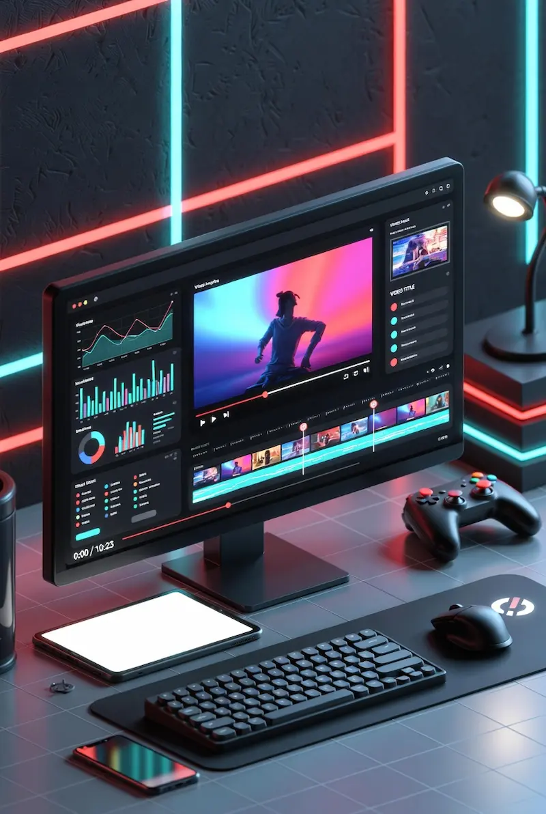

Thumbnail Ultra Pro
Securely Fetch 4K Thumbnails, Edit Live & Download. No Server Uploads.
Beyond Just a Downloader: A Creator's Asset

Every YouTuber knows the struggle: you see a brilliant thumbnail concept, and you want to analyze why it works. Taking a screenshot often results in a blurry, pixelated mess. Thumbnail Ultra Pro solves this by extracting the raw, high-definition image directly from YouTube's servers at the maximum available resolution.
We built this tool not just for downloading, but to help creators, marketers, and designers study the CTR (Click-Through Rate) strategies of top channels and craft more compelling visuals.
Privacy First: How It Works Under the Hood
Most online tools process your requests on their servers, which means they can track what you are searching for. We took a different approach.
-
100% Client-Side Execution: No middleman server ever sees your data. All image processing runs locally in your browser using the HTML5 Canvas API.
-
No-Log Policy: We cannot store your search history because it never leaves your device.
How to Use Thumbnails for SEO & Growth
- A/B Testing Ideas: Download competing thumbnails and compare them side-by-side with your own designs to identify what drives more clicks.
- Competitor Analysis: Study the fonts, color palettes, and face expressions used by viral videos in your niche.
- Restoring Lost Data: Retrieve high-quality cover images for older videos where source files may have been lost.
Fair Use & Copyright Notice
While this tool provides easy access to publicly available image data from YouTube's CDN, intellectual property rights still apply. Always respect content creators by not using their thumbnails commercially or claiming them as your own.
- Educational Purposes
- Personal Archiving
- Fair Use Research
WebP vs. JPG vs. PNG: Which Format Should You Choose?
- JPG (Max): Best for general use and sharing. Offers excellent color depth with a small file size. Ideal for most use cases.
- WebP: The modern web standard. Smaller file size than JPG at equal quality — perfect for web pages and optimization.
- PNG: Choose this only if you need a perfectly lossless copy for further editing in Photoshop or similar tools.
Initializing secure discussion portal...